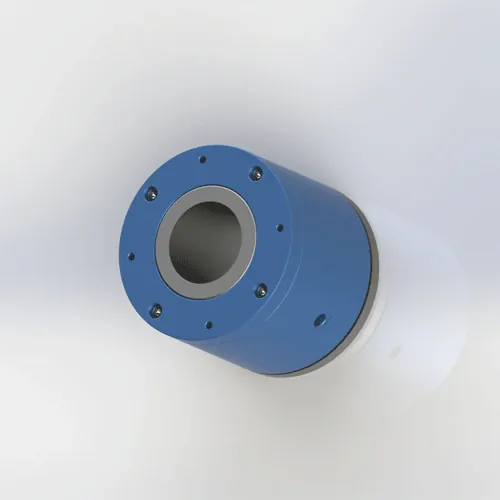

Raccords tournants pneumatiques pour air comprimé
Modèles standard et sur mesure. Quantité minimale de commande : 1 unité. Le délai de fabrication est généralement d’environ 20 jours calendaires pour les modèles du catalogue et de 30 jours calendaires pour les produits sur mesure. Chaque fiche de modèle comprend un plan 2D et un fichier STEP AP214 téléchargeable.
Sélection technique
Comparer les modèles de raccords tournants en ligne
Comparez dans un même tableau la pression, la vitesse de rotation, les passages, le montage et les plans disponibles.

2D PDF
BP-1P-0003 · Monopassage
1 passage
Fileté
Max 1 MPa
Max 500 tr/min
Acier au carbone nuance 45

2D PDF
BP-2P-0001 · 2 passages
2 passages
Montage à bride
Max 1 MPa
Max 200 tr/min
AL6061

2D PDF
BP-3P-0004 · 3 passages
3 passages
Montage à bride
Max 1 MPa
Max 200 tr/min
AL6061
57 $/pièce · 100+

2D PDF
BP-2P-16-0001 · Alésage 16 mm
2 passages
Alésage 16 mm
Montage à bride
Max 1 MPa
Max 200 tr/min
AL6061

Service intensif
BP-2P-130-0001 · Service intensif
2 entrées / 2 sorties
Service intensif
Montage à bride
Max 5 MPa
Max 80 tr/min
Alliage d’aluminium 6061

BP-8P-0001 · 8 passages
8 passages
Montage à bride
Max 1 MPa
Max 200 tr/min
AL6061

2 entrées / 4 sorties1 MPa
BP-2P-95-0005 · 2 entrées / 4 sorties
2 passages indépendants
2 entrées G1/8
4 sorties Ø4 (2 serrage · 2 desserrage)
Max. Ø162 × 86 mm
Max 1 MPa
Max 200 tr/min
Alliage d’aluminium 6061
218 $/pièce · 100+

Pour les environnements poussiéreux
BP-2P-50-0001 · Capot de protection et labyrinthe
2 entrées / 2 sorties
Fluide standard : air
Stator 4 × M5 / Rotor 6 × M5
Max 1 MPa
Max 100 tr/min
AL6061
Joint PTFE + joint torique
Labyrinthe de protection

2D PDF

2D PDF

2D PDF

2D PDF

2D PDF

2D PDF

2D PDF